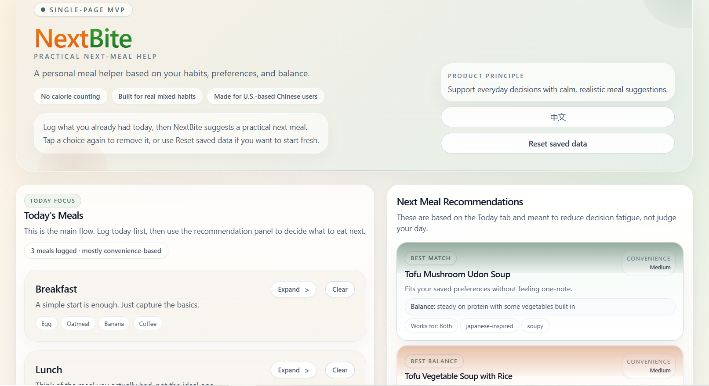

Not a diet app
The product needed to avoid shame, restriction, and calorie obsession. The tone had to stay practical, calm, and non-judgmental.
A bilingual meal decision helper for U.S.-based Chinese users — designed to reduce decision fatigue with practical next-meal suggestions based on what they already ate, their weekly patterns, and how they feel today.

Context
NextBite started from a very specific gap: many meal recommendation experiences feel either too generic or too judgmental. I wanted to design something that acknowledges how people actually eat — home-cooked Chinese meals one day, takeout bowls the next, soup, sandwiches, snacks, and grocery shortcuts in between.
The target audience was U.S.-based Chinese users who needed practical next-meal help, not calorie tracking. That product stance shaped the tone, the data model, and the interface from the beginning.
The key design principle was simple: help people decide what to eat next without making them feel judged.
Early Framing
The project began with a simple frustration: every food question started from scratch. I could ask what to eat next, but the system did not remember what I had eaten earlier in the week, what my usual preferences were, or how my habits were shifting over time. That made each decision feel more repetitive than it needed to be.
Very early on, I knew this should not become another calorie-tracking or weight-loss tool. The more useful opportunity was a product that could remember recent eating context, respect personal taste, and reduce the mental effort of deciding on the next meal.
The product needed to avoid shame, restriction, and calorie obsession. The tone had to stay practical, calm, and non-judgmental.
The target user was a U.S.-based Chinese user with mixed eating habits — someone who may move between Chinese, Japanese, Korean, American light meals, grocery shortcuts, and takeout in the same week.
I intentionally scoped the first version as a single-page web app with lightweight logging, 7-day memory, and explainable recommendation logic instead of trying to build a full nutrition platform.
The core product question became: how can this tool remember what I have been eating, understand my changing preferences, and help me decide what to eat next without making food feel like work?
Challenge
This project was intentionally scoped as a front-end MVP: no authentication, no database, no external APIs. That meant the product had to feel useful using only localStorage, rule-based logic, and well-structured metadata.
Users needed to log meals quickly with chips, dropdowns, and grouped options instead of typing everything manually.
The recommendation engine had to feel grounded in actual user inputs while staying simple enough to tune and maintain.
The copy had to stay supportive and practical — avoiding diet-culture language while still talking about balance.
System Design
I built the recommendation model around metadata-rich meal options and readable helper functions. Instead of pretending to be scientific, the system estimates rough signals like protein, vegetables, carbs, heaviness, convenience, sweet drinks, alcohol, and recent weekly patterns.
Each meal captures protein, vegetables, carbs, fruit, soup, drink, cooking method, source, and portion. I also expanded the food lists to better match North American grocery and takeout realities.
The app derives rough daily and weekly patterns from saved logs so the recommendation cards react to what happened today without ignoring the user’s recent habits.
Meals are scored against preference tags, avoid tags, eating style, time of day, how the user feels today, and variety rules so the top three cards feel distinct rather than repetitive.
Key Decisions
I added English / Chinese switching for UI and recommendation copy, while intentionally keeping many meal names in English. For this audience, that felt more natural than fully translating every food label.
I restructured the page so Today’s Meals and recommendations come first. Past days still matter, but mainly as supporting context for the weekly snapshot and recommendation engine.
I replaced a generic sex field with “How you feel today,” which made the app more respectful and more useful. Warm meals, low-energy days, and lighter options became explicit, user-controlled inputs.
Product Detail
One part I cared about a lot was keeping the recommendations readable and human. The scoring is modular, but the output had to sound like a calm helper rather than a calculator.
AI Collaboration
I built NextBite in close collaboration with AI, but the product direction and design decisions were still mine. AI was most useful as a coding and iteration partner once the product frame was already clear.
The collaboration mattered most when the project moved from “a page with inputs” into “a believable product experience.”
Reflection
NextBite shows how I think about products end to end: not just visuals, but information structure, interaction clarity, rules-based UX logic, and user trust. The most important work was not simply “making the UI pretty” — it was deciding what the product should pay attention to, and what it should deliberately avoid.
If I continued this project, the next meaningful step would be moving from local-only history to cloud sync and accounts. But for an MVP, I think the most important thing was already achieved: the app feels lightweight, understandable, and genuinely useful.